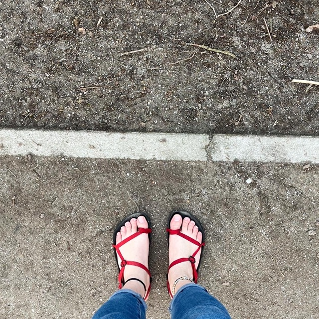

Exodus Sandals in Utrecht
Posted on
My good old sandals have arrived at the Netherlands finally and I have ditched the shoes as the spring is there in the city. The temperature is still 10-15 Celsius but I’m fine. Let’s wait for the 15-20 Celsius to ditch the sandals as well.
